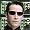
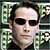

Matrix tem como tema a luta do ser humano, por volta do ano de 2200, para se livrar do domínio das máquinas que evoluíram após o advento da inteligência artificial. A humanidade cobriu a luz do sol para cortar o suprimento de energia das máquinas, mas elas perceberam que cada ser humano produz, em média, 120 volts de energia elétrica, e começaram a cultivá-los como fonte de energia. Para que o cultivo fosse eficiente, os seres humanos passaram a receber programas de realidade virtual, enquanto seus corpos reais permaneciam mergulhados em habitáculos nos campos de cultivo. Essa realidade virtual, que é um programa de computador ao qual todos são conectados, chama-se matrix e simula a humanidade do final do Século XX.
Há, porém, perto do calor do centro da terra, uma última cidade de seres humanos livres, que mandam missões em naves para combater as máquinas. O líder de uma dessas missões é Morpheus, um visionário que vislumbra em um dos habitantes da matrix o "escolhido", que vem a ser Neo, vivido por Keanu Reeves.
Neo é resgatado de seu casulo, sacado da ilusão da realidade virtual e passa a ser treinado por Morpheus. Em sua saga, Neo atinge o status de escolhido, no sentido messiânico da palavra, ao ressuscitar e conseguir, dentro da própria matrix, controlar o programa e derrotar os mecanismos anti-virus, personalizados por agentes vestidos de terno e óculos escuros. Do ponto de vista do programa, os humanos livres são os vírus do planeta terra.